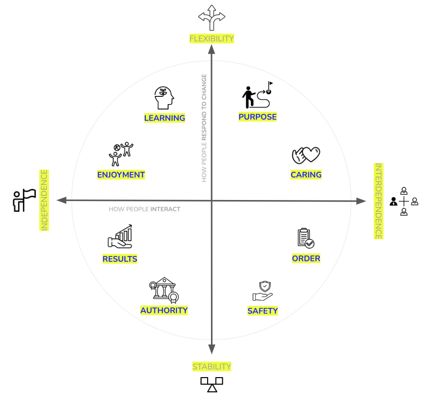

Culture As a Strategy (aka Culture Eats Strategy for Breakfast)
IN THIS SECTION, YOU WILL: Learn that organizational culture profoundly influences IT architecture by shaping how architects approach collaboration, decision-making, innovation, and technical priorities, requiring alignment between cultural values and architectural strategies for long-term success.
KEY POINTS:
- Culture Defines Organizational Behavior & Decision-Making – Shared values, behaviors, and norms shape how strategies are executed and influence IT initiatives.
- Cultural Styles Impact IT Architecture – Different cultures (e.g., results-driven, caring, learning-focused) dictate whether IT prioritizes performance, collaboration, security, or innovation.
- Alignment Between IT Architecture & Culture – IT architects must tailor system designs, governance, and workflows to fit their organization’s cultural environment.
- Balancing Cultural Trade-Offs – Blended cultures (e.g., safety & learning, results & caring) require careful navigation to balance efficiency, risk-taking, and collaboration.
- IT Architects as Cultural Influencers – Architects shape and adapt to organizational culture, ensuring technology strategy aligns with both business goals and cultural dynamics.
The Leader’s Guide to Corporate Culture by Boris Groysberg, Jeremiah Lee, Jesse Price, and J. Yo-Jud Cheng highlights the critical interplay between strategy and culture in driving organizational success. Strategy provides a structured framework for achieving goals, while culture operates through shared values and assumptions, influencing behaviors and norms. Leaders often grasp the mechanics of strategy but underestimate the subtleties of culture, which can lead to execution challenges when cultural dynamics are ignored or mismanaged.
From the perspective of IT architecture, this insight underscores the importance of aligning architectural operating models with an organization’s culture. Just as strategy requires cultural alignment for successful execution, IT architecture practice must integrate cultural considerations to ensure its effectiveness. For example, a collaborative culture would necessitate architectural designs that foster open communication and shared ownership, while a results-oriented culture would focus on performance metrics and scalability. By understanding the nuances of organizational culture, IT architects can not only meet technical goals but also work in a way that resonates with the organization’s values and practices, enabling both technological and cultural transformation.
Key Attributes of Culture
The text discusses the concept of organizational culture, defining it as the tacit social order of an organization that shapes attitudes, behaviors, and norms. It identifies four key attributes of culture based on research by scholars like Edgar Schein and Geert Hofstede:
- Shared: Culture emerges from shared behaviors, values, and norms within a group. It is expressed through collective actions and expectations.
- Pervasive: Culture operates at multiple levels, influencing visible aspects like rituals and symbols as well as unseen factors like mindsets and motivations.
- Enduring: Culture develops over time and becomes self-reinforcing, making it resistant to change due to its role in shaping organizational identity and member selection processes.
- Implicit: Culture functions as an intuitive, silent language that is universal yet deeply ingrained, shaped by evolutionary and psychological factors.
The text emphasizes that culture evolves flexibly in response to changing contexts and highlights its role in aligning organizational purpose with personal values and experiences.
Culture Styles
The text outlines eight distinct organizational culture styles based on two dimensions: people interactions (ranging from independence to interdependence) and response to change (ranging from stability to flexibility).
 Figure 1: Eight distinct organizational culture styles.
These styles are:
- Caring: Focused on relationships, trust, and teamwork, with leaders emphasizing collaboration.
- Purpose: Driven by idealism and altruism, prioritizing sustainability and global contributions.
- Learning: Encourages exploration, creativity, and open-mindedness, with employees sparking new ideas.
- Enjoyment: Emphasizes fun, playfulness, and stimulation, creating a lighthearted work environment.
- Results: Achievement-oriented, focusing on outcomes and top performance, with leaders driving success.
- Authority: Defined by strength and decisiveness, fostering competition and confidence.
- Safety: Centers on planning, caution, and preparedness, ensuring risk-averse decision-making.
- Order: Values structure and rules, creating methodical environments with strong traditions.
Each style has benefits and trade-offs. For example, caring fosters loyalty but may struggle with difficult decisions, while results drives performance but risks undermining teamwork.
The framework can diagnose organizational cultures, evaluate consistency in employees’ views, identify subcultures, and guide mergers, leadership alignment, and aspirational culture design. Combining styles, like results and caring, may create tensions, requiring nuanced leadership to balance values effectively.
Influence of Organizational Culture on IT Architecture
The described cultural styles deeply influence the work of IT architects, shaping how they approach problem-solving, collaboration, and innovation within an organization. Each style aligns with different aspects of an IT architect’s role, emphasizing certain values and priorities.
In a caring culture, the focus on relationships, trust, and teamwork encourages architects to prioritize collaboration and open communication. They work closely with stakeholders to ensure technical solutions meet diverse needs while fostering an inclusive and supportive environment. However, decision-making in such cultures can be slower, as achieving consensus often takes precedence.
A purpose-driven culture aligns with architects who prioritize long-term impact and sustainability. Here, the focus shifts toward designing systems that are ethical and aligned with broader organizational or societal missions. While this culture offers opportunities for meaningful innovation, balancing idealistic goals with practical constraints like budget and timelines can be challenging.
In a learning-oriented culture, architects thrive on exploration, creativity, and innovation. They are encouraged to experiment with cutting-edge technologies and drive continuous improvement. However, this emphasis on innovation can lead to instability or technical debt if new ideas are not implemented with care and structure.
In cultures centered on enjoyment, the focus on fun and creativity allows architects to promote engaging, intuitive user experiences and foster a lively atmosphere for collaboration. While such environments are motivating, they can sometimes struggle with maintaining focus on long-term architectural goals.
A results-oriented culture pushes architects to deliver high-performing, scalable systems that meet clear metrics and business outcomes. This emphasis on achievement and efficiency aligns well with architects who prioritize measurable impact. However, the drive for immediate results may stifle long-term exploration and innovation.
An authority-driven culture emphasizes strong leadership and decision-making, often requiring architects to play a central role in enforcing standards and leading transformations. While this top-down approach ensures clarity and direction, it can limit collaboration and input from others.
In safety-focused cultures, architects prioritize reliability, security, and risk mitigation. They are responsible for designing systems that minimize vulnerabilities and comply with industry standards. While this culture supports stability, it may hinder the organization’s agility and capacity for innovation.
Lastly, an order-driven culture provides IT architects with a structured framework for consistent and predictable system design. This environment enables the establishment of standardized practices and governance. However, the rigidity of such cultures can constrain creativity and responsiveness to change.
In practice, IT architects often work in organizations that blend multiple cultural styles. For example, a combination of results and caring requires architects to balance performance-driven goals with collaborative teamwork. In contrast, a mix of learning and safety encourages innovation within controlled environments, allowing experimentation without risking core systems.
Ultimately, IT architects must adapt their approach to align with their organization’s cultural dynamics. They play a critical role not only in navigating these styles but also in shaping them. By promoting behaviors and initiatives that reflect both organizational goals and technical excellence, architects become influential leaders who bridge cultural values and technical strategies, driving long-term success.
The described cultural styles have significant implications for IT architects, as their role bridges technical, organizational, and strategic domains. Each cultural style aligns differently with the work of IT architects, influencing their approach to problem-solving, collaboration, and driving innovation.
To Probe Further
- The Leader’s Guide to Corporate Culture by Boris Groysberg, Jeremiah Lee, Jesse Price, and J. Yo-Jud Cheng
Questions to Consider
- How would you describe your organization’s dominant cultural style, and how does it influence IT decision-making?
- Does your IT architecture align with your company’s culture, or are there mismatches that create friction?
- How do different cultural styles (e.g., results-driven vs. caring) affect IT governance, decision-making, and innovation?
- What challenges arise when balancing multiple cultural influences in IT architecture, and how can they be addressed?
- In what ways can IT architects actively shape and reinforce culture through technology and process design?
- How does your organization handle trade-offs between collaboration (caring culture) and efficiency (results-driven culture) in IT projects?
- What role does culture play in risk management and security, particularly in safety-oriented or authority-driven cultures?
- How can IT architecture enable a learning culture without introducing instability or excessive technical debt?
- What strategies can IT architects use to foster alignment between culture, business goals, and technology investments?
- How can IT leaders build cultural awareness to ensure architecture decisions support long-term business success?
On Strategy ← Connecting Marketing, Sales, and Customer Service Strategies |
Expanding the Architect's Toolkit Expanding the Architect's Toolkit: Learning From Other Fields → |